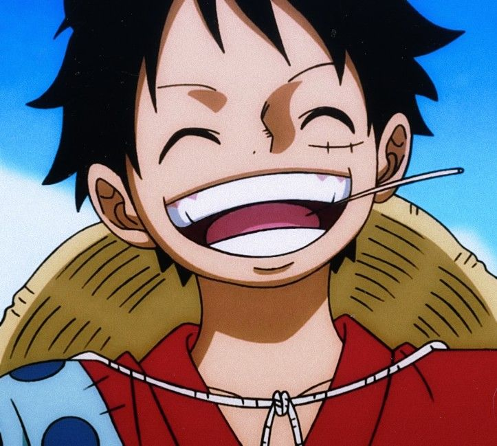
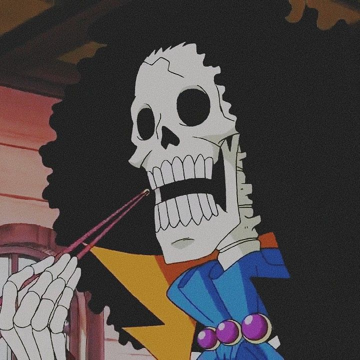

.jpg)
Luffy
Luffy, mais conhecido como "Luffy Chapéu de Palha" ou simplesmente "Chapéu de Palha", é o fundador, capitão e combatente mais forte dos Piratas do Chapéu de Palha. Ele busca destemidamente o lendário tesouro do falecido Gol D.
Zoro

Na história, Zoro era um caçador de piratas que por fim se torna um quando é convencido pelo protagonista Monkey D. Luffy a ser o primeiro membro de sua tripulação, os Piratas do Chapéu de Palha...
Nami

Nami, a "Gata Ladra", é a navegadora dos Piratas do Chapéu de Palha e uma dos Oficiais Seniores da Grande Frota do Chapéu de Palha...
Ussop
.webp)
Usopp (ウソップ, Usopp), também conhecido como God Usopp, é um personagem fictício da série One Piece...
Sanji

Vinsmoke Sanji, também conhecido como Sanji Perna Preta, é um personagem criado por Eiichiro Oda para o seu mangá One Piece...
Chopper

Tony Tony Chopper é uma rena e o médico dos Piratas do Chapéu de Palha. Ele adquiriu a habilidade de se transformar após comer a Hito Hito no Mi...
Robin

Nico Robin, também conhecida como "Criança Demônio", é a arqueóloga dos Piratas do Chapéu de Palha...
Franky
Franky é o carpinteiro dos Piratas do Chapéu de Palha. Ele é um cyborg e foi inicialmente antagonista da história antes de se tornar aliado...
Brook
Brook é o Músico dos Piratas do Chapéu de Palha. Ele é um esqueleto e um usuário da Akuma no Mi Yomi Yomi no Mi...
Jimbei
Jinbe, o Cavaleiro do Mar, é o timoneiro dos Piratas do Chapéu de Palha. Ele é um tubarão-baleia e mestre do karatê Homem-Peixe...